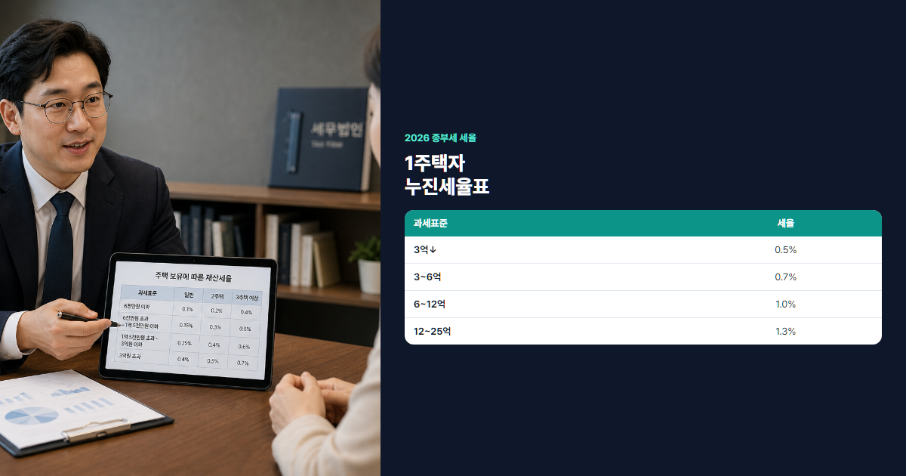

2026 종합부동산세 완벽 정리 (과세 대상·세율·계산·1주택 공제)
매년 12월 종부세, 미리 계산하면 놀라지 않습니다
"매년 12월 종부세 고지서 받고 깜짝 놀란다"는 말, 집값이 오른 1주택자에게는 익숙한 이야기입니다. 종합부동산세(종부세)는 보유 단계에서 내는 국세로, 공시가격이 일정 수준을 넘으면 재산세와 별도로 부과됩니다. 12월에 갑자기 계산하기보다, 6월 1일 기준 공시가격으로 미리 시뮬레이션해 두는 것이 현명합니다. 취득·양도·보유 세금은 서로 연결되므로, 한 번에 점검하는 습관이 도움이 됩니다.
- 종부세 계산 공식과 2026년 세율·공제(1주택 12억)를 정리합니다.
- 고령자·장기보유 세액공제, 부부공동명의 18억 공제 비교를 담았습니다.
- 공시가 10억·15억·20억 4가지 시뮬레이션과 절세·FAQ까지 안내합니다.
본론 1. 종합부동산세 기본 이해
종부세란?
종합부동산세는 일정 가액 이상의 부동산을 보유한 자에게 부과하는 국세입니다. 과세 기준일은 매년 6월 1일이며, 이날 기준 소유·공시가격으로 세액이 산정됩니다. 주택·종합합산토지·별도합산토지로 구분되며, 일반 가정에서는 주택 종부세가 핵심입니다. 2005년 도입 이후 공시가격 상승과 함께 납세 대상자가 늘었고, 2023년 개정으로 1주택 공제가 9억에서 12억으로 확대되었습니다.
과세 대상 상세
주택은 아파트·단독·다가구·연립·다세대·주거용 오피스텔(주택 분류) 등이 포함됩니다. 종합합산토지·별도합산토지는 대규모 토지 보유자 대상으로, 일반 직장인에게는 해당이 드뭅니다. 분양권·입주권은 보유 주택 수 산정에 영향을 줄 수 있어, 청약·갈아타기 전에 확인이 필요합니다.
재산세와 차이
재산세는 지방세로 매년 7월·9월에 납부하고, 종부세는 국세로 12월에 납부합니다. 재산세를 냈다고 종부세가 면제되는 것은 아니지만, 종부세 산출 시 재산세 상당액을 공제해 이중부담을 줄입니다. 실질적으로는 "재산세 위에 추가로 얹는 국세"에 가깝다고 이해하면 됩니다. 공시가 9억 이하 1주택은 재산세만 부과되고 종부세는 없는 경우가 많아, 12억 공제와 함께 기억하면 편합니다.
납부 시기
매년 12월 1일~15일에 납부합니다(분납 시 일정 연장). 원칙적으로 별도 신고 없이 자동 고지되며, 홈택스에서 예상 세액을 조회할 수 있습니다.
계산 공식
과세표준 = (공시가격 합계 − 공제금액) × 공정시장가액비율
세액 = 과세표준 × 세율 − 재산세 상당액(중복분) − 세액공제(고령·장기보유 등)
2026년 공정시장가액비율은 60%입니다. 공시가 15억 1주택이면 (15억−12억)×60% = 1.8억이 과세표준에 가깝고, 여기에 누진세율이 적용됩니다.

본론 2. 2026년 종부세 세율·공제
공제금액
| 구분 | 공제금액 |
|---|---|
| 1주택자 | 12억원 (2023 개정 반영) |
| 다주택자 | 9억원 |
| 공정시장가액비율 | 60% (2026년) |
1주택자 기본세율 (2026)
| 과세표준 | 세율 |
|---|---|
| 3억원 이하 | 0.5% |
| 3억~6억원 | 0.7% |
| 6억~12억원 | 1.0% |
| 12억~25억원 | 1.3% |
| 25억~50억원 | 1.5% |
| 50억~94억원 | 2.0% |
| 94억원 초과 | 2.7% |
다주택자 중과
조정지역 2주택, 전국 3주택 이상은 중과세율이 적용됩니다. 기본세율에 가산되어 보유 부담이 크게 늘어나므로, 1주택 유지가 절세의 기본입니다. 조정지역 2주택은 기본세율에 0.6%p 등이 가산되고, 3주택 이상은 더 높은 중과가 붙습니다. 다주택자는 공제도 9억으로 줄어들어, 같은 공시가라도 1주택자보다 세 부담이 훨씬 큽니다.
실전 계산: 공시가 15억 1주택 (65세·10년 보유 가정)
과세표준 = (15억−12억)×60% = 1.8억원. 1.8억은 6억~12억 구간(1.0%)에 해당 → 산출세액 약 180만원(단순화). 재산세 상당액 공제·고령자 20~40%·장기보유 20~50% 공제 적용 시 실납부는 수십만원대까지 내려갈 수 있습니다. 정확한 금액은 홈택스 종합부동산세 예상세액 메뉴에서 본인 조건으로 조회하는 것이 가장 정확합니다.
과세표준 1.8억 → 공제 후 실납부 약 50~150만원 (개인별 상이)
본론 3. 1주택자 세액공제 혜택
고령자 세액공제
60세 이상 1주택자는 산출세액의 20~40%을 공제받습니다. 연령이 높을수록 공제율이 올라갑니다. 70세·80세 구간에서 공제율이 단계적으로 증가합니다.
장기보유 세액공제
5년 이상 보유·거주 시 20~50% 공제. 15년 이상 거주 시 최대에 근접합니다. 고령자 공제와 합산 최대 80%까지 적용됩니다. 보유만 하고 거주하지 않으면 장기보유(거주) 공제가 제한될 수 있으니, 실거주 여부를 유지하는 것이 좋습니다.
부부공동명의 특례
1주택을 부부 공동명의로 보유하면, 각각 9억원 공제를 받아 합계 18억원까지 공제 가능합니다. 단독명의 12억 공제보다 유리한 경우가 많아, 고가주택은 부부공동명의를 검토합니다.
💡 부부공동명의 신청 방법
- 등기부등본상 공동명의로 소유권 이전(또는 최초부터 공동명의)
- 6월 1일 기준 공동명의여야 해당 과세기간에 적용
- 홈택스·관할 세무서에서 공동명의 1주택 여부 확인
- 공시가 12억 초과~18억 이하 구간에서 효과가 큼
명의 방식 비교
| 공시가 | 단독명의 (12억 공제) | 부부공동명의 (18억) |
|---|---|---|
| 10억 | 비과세 | 비과세 |
| 15억 | 과세 (3억×60%) | 비과세 (15억<18억) |
| 20억 | 과세 (8억×60%) | 과세 (2억×60%) |
본론 4. 실전 계산 시뮬레이션
케이스 A: 공시가 10억 1주택
10억 < 12억 공제 → 과세표준 0원 → 종부세 0원. 재산세만 납부하면 됩니다. 수도권 아파트 많은 1주택자가 이 구간에 해당하며, 공시가가 오르면 언제든 과세 대상이 될 수 있어 매년 공시가를 확인하세요.
케이스 B: 공시가 15억 1주택, 65세, 10년 보유
과세표준 1.8억, 산출세액 약 180만원(단순). 고령 30%+장기보유 40% 공제(합 70%, 상한 80% 미만) 적용 시 실납부 약 50~100만원 수준(재산세 공제 후). 같은 조건에서 55세 미만·5년 미만 보유라면 공제 없이 150만원 이상 나올 수 있어, 연령·보유기간이 종부세에 큰 영향을 줍니다.
케이스 C: 공시가 20억 부부공동명의
공제 18억 → 과세표준 (20억−18억)×60% = 1.2억원. 단독명의(8억×60%=4.8억 과세표준)보다 훨씬 유리. 실납부 약 100~200만원대 예상(공제·재산세 차감 후). 공시가 17억~18억 구간에서 부부공동명의 효과가 가장 큽니다. 20억을 넘어가면 다시 과세표준이 생기므로, 명의 변경만으로 0원은 어렵습니다.
케이스 D: 조정지역 2주택 각 공시가 8억
다주택·중과 → 공제 9억, 중과세율 적용. 합산 공시가 16억, 과세표준 대폭 증가 → 종부세 수백만~천만원대 가능. 1주택 전환 또는 매도 검토가 절세의 핵심입니다. 한 채를 먼저 매도해 1주택으로 만든 뒤, 남은 주택은 12억 공제·세액공제를 받는 구조가 유리할 수 있습니다.
종부세 계산 체크리스트
- 6월 1일 기준 주택 수·명의(단독/공동) 확인
- 공시가격 합계 조회 (공시가격 알리미·홈택스)
- 공제 12억(1주택) 또는 18억(부부공동) 적용
- × 공정시장가액비율 60% = 과세표준
- 누진세율 적용 후 재산세 공제·고령·장기보유 공제 차감
종부세 절세 전략
- 부부공동명의: 12억~18억 구간 공시가에서 18억 공제 활용
- 1주택 유지: 다주택 중과 회피, 양도세 비과세와도 연계
- 자녀 증여: 증여세 vs 종부세·보유 부담 비교 후 결정
- 임대사업자 등록: 일정 요건 충족 시 감면(지역·기간별 확인)
절세의 첫 단계는 6월 1일 전 명의·공동명의 구조를 점검하는 것입니다. 공시가가 매년 공시되므로, 매년 초 홈택스에서 예상 종부세를 조회해 가계 예산에 반영하세요. 매도를 검토 중이라면 종부세와 양도소득세를 함께 시뮬레이션하면 총세부담이 보입니다.
⚠️ 편법 회피 주의
가짜 증여·명의신탁·편법 분양권 보유 등으로 종부세를 회피하면 가산세·추징 대상이 될 수 있습니다. 합법적 공제·명의 변경만 검토하세요.
신고·납부 실전
원칙적으로 별도 신고 불필요, 국세청이 자동 계산·고지합니다. 홈택스(hometax.go.kr) → 세금신고·납부 → 종합부동산세에서 예상세액 조회 가능. 세액 250만원 초과 시 2회 분납(12월·다음 해 2월)이 가능합니다. 신용카드·계좌이체·가상계좌로 납부할 수 있습니다.
고지서 금액이 예상과 다르면 공시가격 합산·주택 수·공동명의 반영 여부를 확인하세요. 이의신청 기간 내에 홈택스 또는 세무서에 문의할 수 있습니다. 분납을 선택하면 첫 납부는 12월, 잔액은 이듬해 2월에 납부합니다.
자주 묻는 질문 (FAQ)
Q1. 종부세와 재산세 이중과세 아닌가요?
재산세를 완전히 면제하는 것은 아니지만, 종부세에서 재산세 상당액을 공제합니다. 실질 부담은 "추가분"에 가깝습니다. 예를 들어 재산세 150만원·종부세 산출 200만원이면, 재산세 150만원을 빼고 50만원만 추가 납부하는 구조입니다.
Q2. 상속받은 주택도 즉시 종부세 대상인가요?
상속 개시일(6월 1일 기준)에 소유권이 이전되면 해당 연도부터 과세 대상이 될 수 있습니다. 공시가·주택 수에 따라 결정됩니다. 상속 전 피상속인 명의였던 주택이 합산되어 과세될 수 있으니, 상속 등기 시점을 6월 전후로 고려할 여지가 있습니다.
Q3. 오피스텔 주거용도 종부세 되나요?
주택으로 분류된 주거용 오피스텔은 대상일 수 있습니다. 업무·숙박용은 제외되는 경우가 많습니다. 건축물대장상 용도와 지자체·국세청 해석을 확인하고, 주택 수 합산 여부를 점검하세요.
Q4. 부부공동명의 변경 언제까지 가능?
6월 1일 기준 소유 형태가 적용됩니다. 해당 연도 종부세를 줄이려면 6월 1일 전에 등기 완료가 필요합니다. 연말에 명의를 바꿔도 다음 해 과세부터 반영되므로, 시기를 놓치지 않도록 5월까지 절차를 마치는 것이 좋습니다.
Q5. 종부세 위헌 논란 결과는?
헌법재판소 관련 판결·쟁점은 법령 개정에 따라 달라질 수 있습니다. 최신 국세청 안내를 확인하세요.
Q6. 임대주택 종부세 감면 조건은?
장기임대 등록·의무기간·지역 요건을 충족하면 감면이 가능합니다. 임대사업자 등록과 연계해 검토하세요. 다만 임대만 하고 본인이 거주하지 않으면 1주택 세액공제·양도세 실거주 요건과 충돌할 수 있습니다.
Q7. 공시가격은 어디서 확인하나요?
공시가격 알리미(국토교통부)·홈택스·실거래가 지도로 인근 시세와 함께 비교해 보세요. 공시가격은 매년 4월경 공시되며, 6월 1일 과세 기준가로 반영됩니다.
Q8. 종부세 안 내면 어떻게 되나요?
납부기한을 지키지 않으면 가산세가 붙습니다. 고지서를 받은 뒤 12월 15일까지 납부하는 것이 원칙이며, 분납 시에도 첫 회 차 납부 기한을 지켜야 합니다.
결론
① 종부세는 6월 1일 공시가 기준, 12월에 납부하는 보유세입니다. ② 1주택 12억 공제, 부부공동명의 18억, 고령·장기보유 공제를 활용하세요. ③ 다주택·고가주택은 미리 시뮬레이션하고, 취득세·생애최초 감면·양도세와 함께 점검하세요. 12월 고지서에 놀라지 않으려면 지금 홈택스에서 예상 세액을 조회해 보시기 바랍니다. 부동산 세금 시리즈를 순서대로 읽으면 취득·보유·양도 전 과정을 한눈에 정리할 수 있습니다.
📎 출처
본 글은 2026년 7월 기준 일반 정보이며, 종부세율·공제 요건은 법령 변경에 따라 달라질 수 있습니다. 납부 전 국세청·홈택스에서 최종 확인하시기 바랍니다.